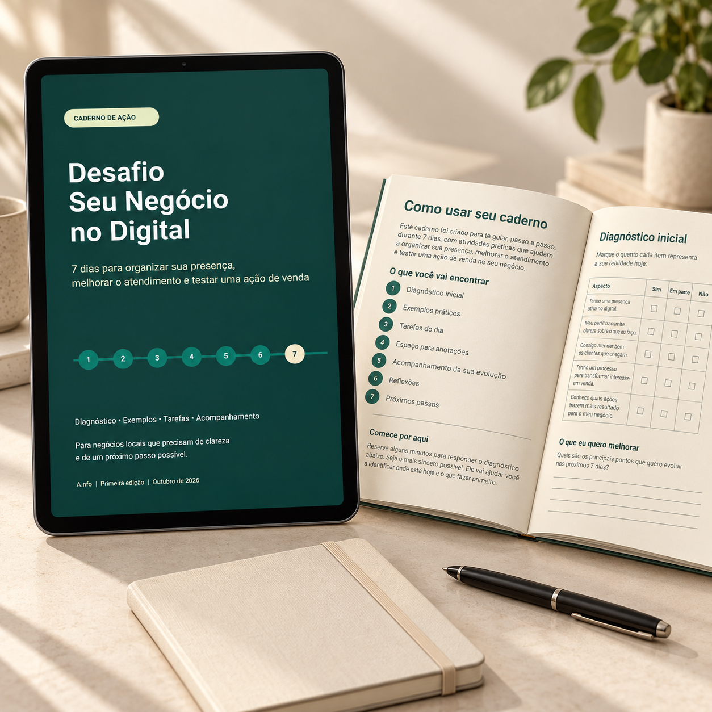

O cliente não encontra as informações.
Horários, contato ou detalhes do serviço ficam espalhados e geram perguntas que poderiam ser resolvidas antes.
UM DESAFIO PARA NEGÓCIOS LOCAIS
Você não precisa fazer tudo de uma vez. Em 7 dias, organize sua presença, melhore o atendimento e teste uma ação de venda com um plano simples para seguir.
Quero começar meu desafioEbook digital por R$37•38 páginas de orientação e prática
Diagnóstico + tarefas + fichas de acompanhamento.
Para sair da dúvida e saber o que fazer primeiro.

Menos improviso.
Mais clareza.
Lojas de bairro · Salões e barbearias · Confeitarias · Serviços locais
VOCÊ RECONHECE ESSA ROTINA?
Entre atender, produzir e entregar, é fácil acumular ideias sem saber qual realmente merece sua atenção agora.
Horários, contato ou detalhes do serviço ficam espalhados e geram perguntas que poderiam ser resolvidas antes.
Você responde quando dá, esquece retornos e não tem uma visão clara do que ainda está pendente.
Falta ligar a publicação a uma oferta e registrar o que aconteceu para escolher o próximo passo.
O desafio começa com a sua realidade.
Primeiro, entenda o problema. Depois, faça uma melhoria pequena.
SETE DIAS. UM CAMINHO CLARO.
Reserve, como referência, 30 a 45 minutos por dia. Avance no seu ritmo e use a versão mínima das tarefas quando a rotina apertar.
DIAS DE AÇÃO
COM ORIENTAÇÃO
Identifique uma dificuldade e uma melhoria que cabe na semana.
Organize o que vende, para quem, com quais condições e próximo passo.
Revise informações, imagens próprias e o caminho de contato.
Prepare respostas e acompanhe os pedidos que estão pendentes.
Apresente uma oferta com informações e uma chamada para agir.
Execute um teste possível e registre as respostas recebidas.
Revise o que fez e escolha sua rotina para os próximos 30 dias.
UM EBOOK PARA USAR, NÃO SÓ LER
O Desafio Seu Negócio no Digital reúne orientação e espaço para transformar a leitura em ações do seu negócio.
Olhe para oferta, vitrine, atendimento e organização para escolher uma prioridade.
Sete etapas com orientação prática, exemplos e uma versão mínima para dias corridos.
Registre o que percebeu, o que executou e o que aconteceu durante os testes.
Roteiros de recepção, oferta, disponibilidade e retorno com contexto e respeito ao cliente.
Aplicações para salão, confeitaria, oficina e loja de bairro, com casos fictícios identificados.
Uma rotina simples de 30 dias para manter as melhorias e acompanhar o próximo passo.
O que percebi?
O que vou fazer?
O que aconteceu?
REGISTRAR · APLICAR · REVISAR
PAPEL E CANETA POR PERTO
Comece com um caderno ou folhas para anotar o que importa. Ao terminar cada etapa, registre a dificuldade, a ação escolhida e o que você observou.
As fichas ajudam a comparar seu ponto de partida com o que conseguiu construir. Se preferir, use um arquivo de notas.
Quero construir meu planoO PRÓXIMO PASSO COMEÇA AQUI
Leve o desafio para a rotina do seu negócio e faça uma melhoria de cada vez.
Para quem quer aplicar por conta própria.
A consultoria é opcional e contratada separadamente.
7 dias de orientação e prática
Valor do ebook
Pagamento pela Kiwify. As condições de compra e acesso serão apresentadas no checkout.
ANTES DE COMEÇAR
Um desafio simples para encaixar na sua realidade.
Para quem cuida de um negócio local e quer organizar sua presença digital e atendimento: lojas, salões, barbearias, confeitarias, oficinas e outros serviços de bairro.
Você pode começar com conhecimentos básicos. As etapas trazem orientações, exemplos e tarefas. Algumas configurações podem exigir consultar a ajuda da ferramenta que você usa.
A referência é de 30 a 45 minutos por dia, mas algumas tarefas podem levar mais tempo. O ebook oferece versões mínimas das atividades e você pode avançar no seu ritmo.
O desafio não exige anúncios pagos. Ele propõe organizar as bases e testar uma ação pequena usando os canais e recursos que você já tem.
O botão de compra direciona ao checkout da Kiwify. Confira por lá as condições de pagamento e as orientações de acesso ao ebook digital. As imagens são mockups de apresentação; a oferta não inclui livro físico, tablet, caderno ou caneta.
Não. O ebook foi criado para aplicação por conta própria. Ao final, há um convite para conversar sobre uma consultoria opcional, com formato, escopo e contratação separados.
O desafio não garante vendas, faturamento ou recuperação do negócio. A proposta é concluir melhorias, testar uma ação e registrar o que aconteceu para decidir os próximos passos com mais clareza.
Um passo possível por dia.
Comece pelo seu.